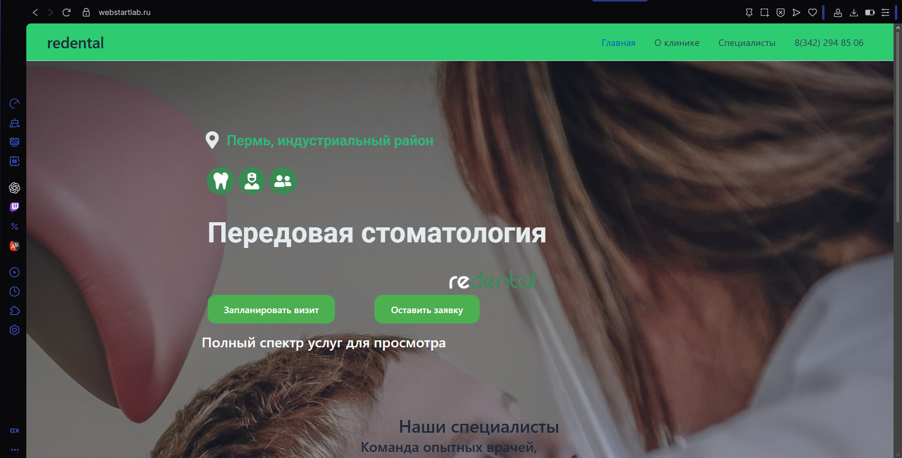
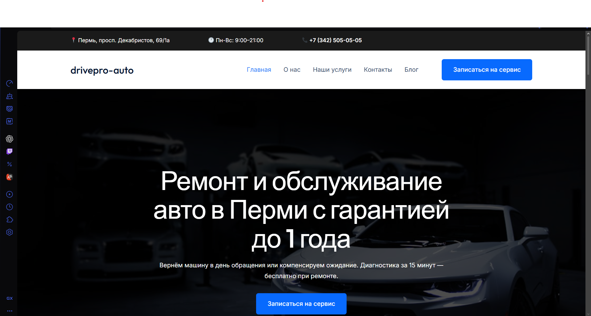
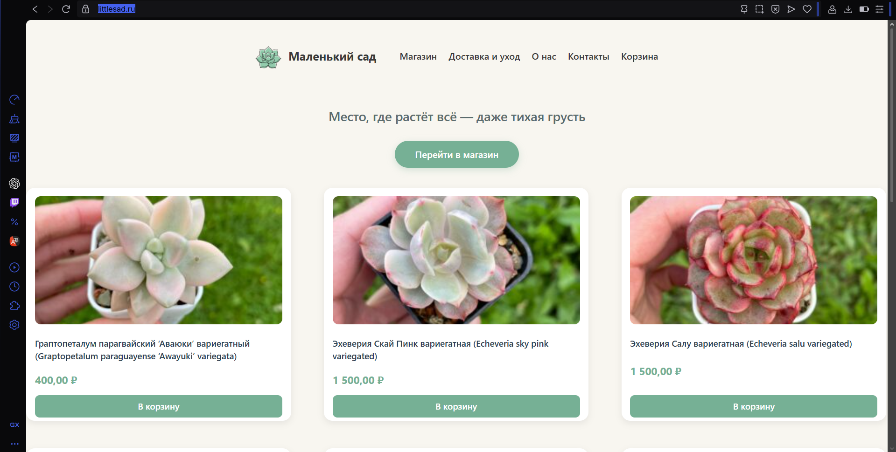

Передовая стоматология
Лендинг для клиники в Перми. Семантическая верстка, адаптивный дизайн и акцент на удобство записи к специалистам.
Junior Web Developer & WordPress Specialist
Создаю адаптивные, семантически верные и быстрые сайты. Владею HTML, CSS, JavaScript и основами SEO. Ответственно подхожу к задачам и постоянно развиваюсь.

Лендинг для клиники в Перми. Семантическая верстка, адаптивный дизайн и акцент на удобство записи к специалистам.

Сайт автосервиса с гарантией. Четкая иерархия заголовков, адаптивные сетки услуг и яркие призывы к действию (CTA).

Каталог-витрина магазина суккулентов. Использование figure/figcaption, гибкая сетка товаров и визуальная легкость.